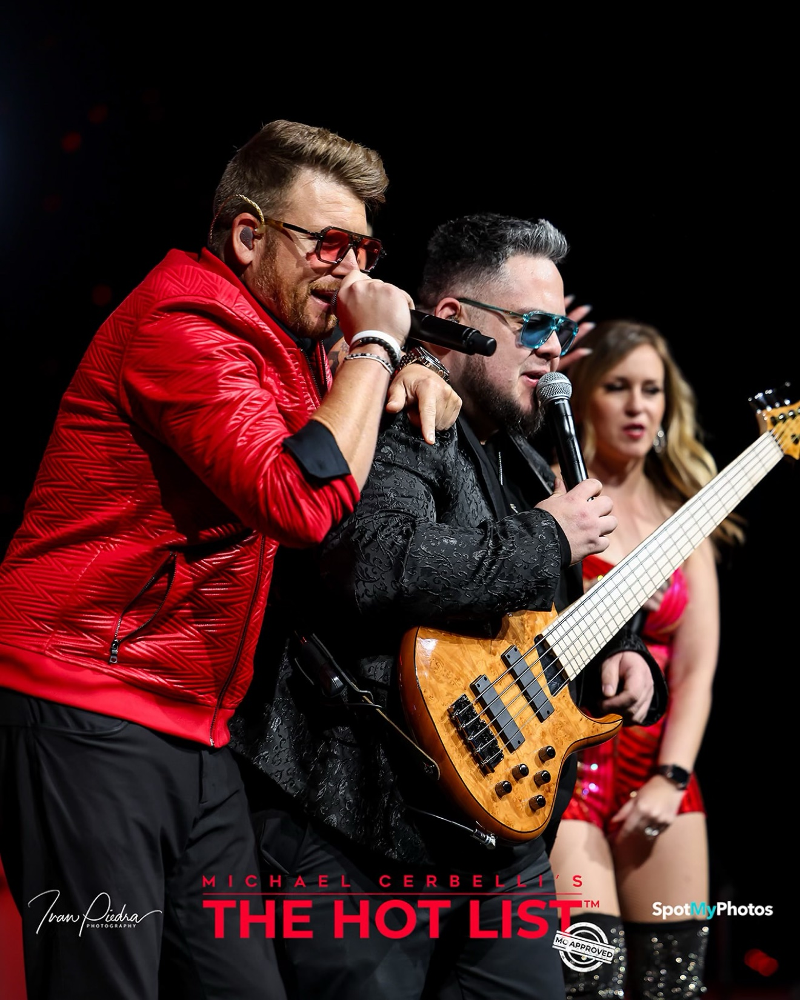
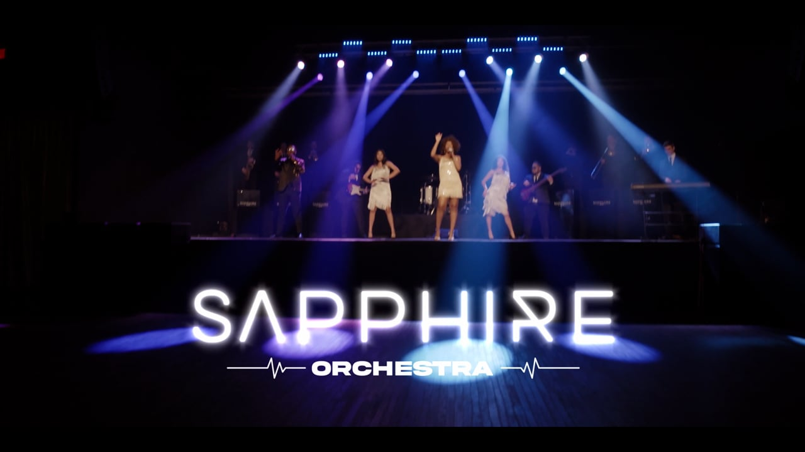
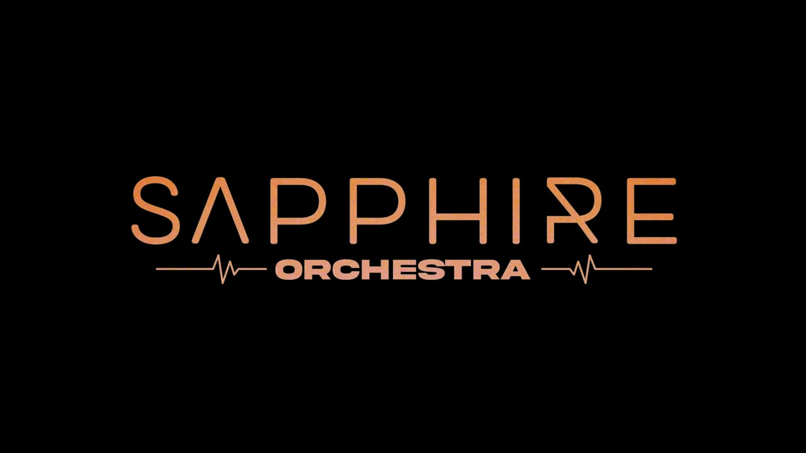
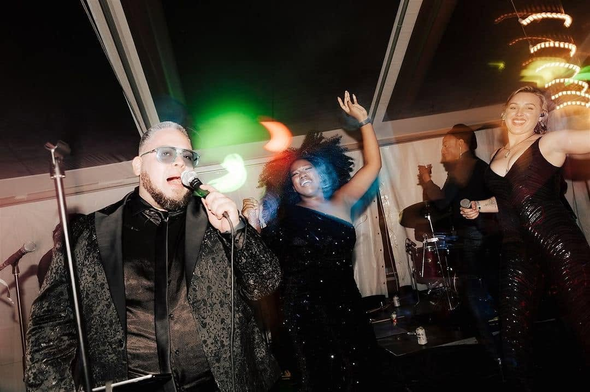

Reads the book, not just the room
Sight-reading bassist who also taught low brass in Texas schools. Charts, last-minute subs and new arrangements land quickly and accurately.

The bass chair, covered — pocket, reading and musical direction in one hire. 20+ years holding down Dallas's top corporate and club bands, now available for house-band, cruise, residency and dep work worldwide.
Watch & EPK
All of Eddie's performance video and the full EPK — in one place, one click away.
Live on bass
Four full live performances — Sapphire twice, and Aura twice — plus three short reels from the bass chair. No studio fixes, no edits to hide behind: just time, feel and a band locked in around him.

Eddie on bass with Sapphire, driving the Whitney Houston classic — bright, busy and right where a dance floor needs it.
Watch on Vimeo ↗
The Emotions' classic with Sapphire — tight, soulful and deep in the pocket. This is the groove case, made in one take.
Watch on Vimeo ↗Eddie on bass with Aura by Scott Michaels — a third band, a third room, the same foundation. Adaptability across lineups is the whole point of a great dep and house-band bassist.
Watch on YouTube ↗Eddie on bass with AURA Event Entertainment on the Annie Lennox hit — sharp, funky pop with the bass right up front in the groove, holding the whole arrangement together.
Watch on YouTube ↗One unbroken minute from a venue gig — Eddie fronting on the 5-string and the mic at once, drummer locked in behind him.
Lead vocals without the bass part ever thinning out — the double every musical director hopes for.
The Bobby Caldwell groove, played smooth and unhurried with the full band, live through the final chorus.
Why this chair
Sight-reading bassist who also taught low brass in Texas schools. Charts, last-minute subs and new arrangements land quickly and accurately.
Funk, Motown, disco, soul and R&B at the core — with rock, pop, jazz, country and yacht rock covered from a 300+ song working book.
As bandleader for Downtown Fever he hired players, built sets and ran the stage. He knows what you need before you have to ask.
Lead and harmony vocals from the bass chair, plus piano and guitar in the locker — flexibility when a lineup changes at short notice.
About
Eddie Aguilar is a professional electric bassist, vocalist and bandleader with more than twenty years on stage. In Dallas he has played with every major act in the market — leading Downtown Fever under Emerald City management and working across the city's busiest corporate, wedding and club bands.
That breadth is the offer for cruise lines, hotels and production shows: a bassist who can anchor a house band six nights a week, step into a dep chair with a chart in front of him, or musical-direct the whole room when that's what's needed.
Bilingual in English and Spanish, with a home recording setup for remote session work and online bass lessons alongside live engagements.

Styles
Live



From the book
A slice of a 300+ song working repertoire — the bass-led anchors. Full list available on request, and new books are learned fast.
Available for cruise house bands, hotel residencies, production shows, dep/sub calls and remote sessions. Based in Bangkok — available worldwide.